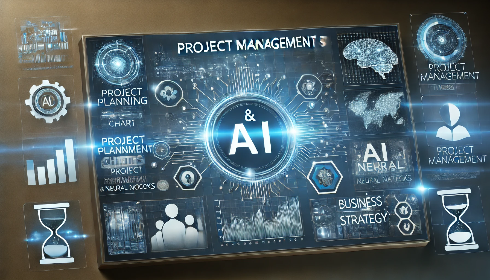

In today’s fast-paced world, the integration of Artificial Intelligence in Project Management is revolutionizing the way businesses operate. From intelligent automation and predictive analytics to risk assessment and workflow optimization, AI empowers project managers with real-time insights, enhanced decision-making capabilities, and increased efficiency. Whether you’re a seasoned professional or just beginning your journey, this platform provides in-depth knowledge, industry trends, and practical tools to help you navigate the future of project management with AI. Explore, learn, and transform the way you manage projects!
Project Management & AI is a platform dedicated to bridging the gap between traditional project management practices and cutting-edge artificial intelligence technologies. Our mission is to empower professionals, businesses, and aspiring leaders with the knowledge, tools, and insights needed to navigate the evolving landscape of project management. With AI-driven automation, data-driven decision-making, and intelligent risk assessment, modern project management is transforming at an unprecedented pace. Through in-depth articles, case studies, best practices, and expert opinions, we aim to provide valuable resources that help professionals adapt, innovate, and excel. Whether you are a project manager, an executive, or an AI enthusiast, this platform serves as your go-to hub for exploring the limitless possibilities of AI in project management.
| Certification | Issuing Organization | Description |
|---|---|---|
| PMP (Project Management Professional) | PMI (Project Management Institute) | A globally recognized certification for project managers. |
| PRINCE2 | AXELOS | A structured project management methodology focusing on processes and control. |
| CSM (Certified Scrum Master) | Scrum Alliance | Certification for mastering the Scrum framework. |
| SAFe Agilist | Scaled Agile | Certification for implementing Agile at scale. |
| CAPM (Certified Associate in Project Management) | PMI | Entry-level project management certification. |
Essential areas of project management, including scope, time, cost, quality, risk, and stakeholder management.
| Knowledge Area | Description |
|---|---|
| Project Integration Management | Ensures that project elements are properly coordinated, including project plan development, execution, and change control. |
| Project Scope Management | Defines what work is required and ensures that all necessary tasks are completed while avoiding unnecessary work. |
| Project Schedule Management | Focuses on timely project completion by planning, defining activities, sequencing, estimating durations, and controlling the schedule. |
| Project Cost Management | Involves estimating, budgeting, and controlling project costs to ensure completion within the approved budget. |
| Project Quality Management | Ensures project deliverables meet defined quality standards through quality planning, assurance, and control. |
| Project Resource Management | Involves acquiring, developing, and managing the project team and resources needed for project success. |
| Project Communication Management | Ensures timely and appropriate planning, collection, creation, distribution, storage, and management of project information. |
| Project Risk Management | Identifies, analyzes, and responds to project risks to minimize potential negative impacts and maximize opportunities. |
| Project Procurement Management | Manages procurement of goods and services required for the project, including vendor selection, contract management, and procurement execution. |
| Project Stakeholder Management | Identifies project stakeholders, analyzes their expectations and influence, and develops strategies to engage them effectively. |
This approach follows a structured, sequential process with well-defined phases.
Predictive Project Management, commonly known as the Waterfall approach, is a structured project management methodology where all phases are planned upfront and executed in a sequential manner. It is best suited for projects with well-defined objectives, stable requirements, and minimal expected changes. This methodology ensures thorough documentation, clear milestones, and strict phase-wise execution.
Each phase, such as initiation, planning, execution, monitoring, and closure, follows a predefined path, making it easier to track progress and manage resources efficiently. However, it lacks flexibility, making it less ideal for dynamic and evolving projects. Industries such as construction, manufacturing, and large-scale software development often rely on predictive project management to ensure quality, compliance, and timely delivery.
Agile focuses on flexibility, adaptability, and iterative development.
Agile Project Management is an iterative and flexible approach that focuses on continuous improvement, collaboration, and customer feedback. Unlike the traditional predictive model, Agile embraces change and encourages adaptive planning, making it ideal for projects with evolving requirements. Agile methodologies, such as Scrum and Kanban, emphasize incremental development, frequent releases, and cross-functional teamwork.
By breaking projects into smaller iterations called sprints, Agile allows teams to deliver value faster while responding to changes in real time. Daily stand-up meetings, backlog prioritization, and continuous feedback loops ensure that teams remain aligned with business goals. Agile is widely used in software development, product innovation, and industries that require rapid adaptability and customer engagement.
This approach combines elements from predictive and agile methodologies.
Hybrid Project Management is a flexible approach that combines elements from both predictive (traditional/waterfall) and adaptive (Agile) methodologies. It leverages the structured planning and documentation of predictive models while incorporating the iterative flexibility of Agile. This approach is ideal for projects where certain phases require well-defined milestones and regulatory compliance, while others benefit from rapid adaptation and continuous feedback.
Hybrid models are widely used in industries that demand a balance between stability and agility. Teams can define fixed project phases for high-level planning while using Agile sprints for iterative development. This ensures that organizations can maintain control over scope, budget, and deadlines while also adapting to changing business needs and technological advancements.
With advancements in artificial intelligence, project management is evolving with AI-powered tools.
AI-Driven Project Management leverages artificial intelligence, machine learning, and automation to enhance decision-making, optimize workflows, and improve project efficiency. AI tools analyze vast amounts of data to provide predictive analytics, risk assessment, and intelligent automation, reducing manual effort and enhancing project success rates. These solutions help project managers make data-driven decisions, allocate resources effectively, and identify potential bottlenecks before they become critical issues.
With the rise of AI-powered project management tools, teams can automate repetitive tasks such as scheduling, reporting, and risk identification. AI enhances agility by continuously learning from project data, suggesting improvements, and providing real-time insights. It enables project managers to shift their focus from administrative tasks to strategic planning and innovation.